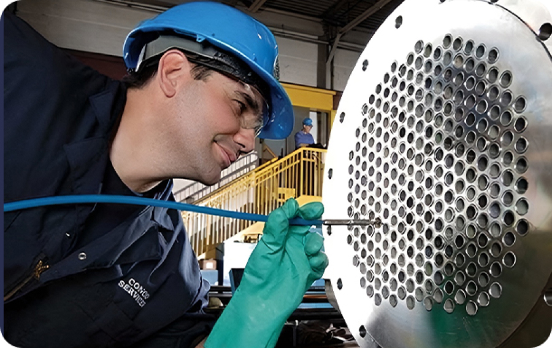

Чистка теплообменников
Гидроструйная очистка теплообменников и трубных пучков представляет собой разновидность гидродинамического воздействия на мягкие и твердые отложения без применения химических реагентов и абразивных добавок. Для удаления загрязнений применяются промышленные мобильные установки с автономным питанием, насосной группой и чистящей головкой, позволяющей проходить в труднодоступные места без демонтажа устройств.
Конструктивные особенности и комплект рабочих головок водоструйной установки BMN позволяют применять технику для работы с разными видами теплообменников в химической, фармацевтической, пищевой промышленности, на пивоваренных заводах и алюминиевом литейном производстве. Методика хорошо зарекомендовала себя в обслуживании пучков труб и теплообменников в нефтехимической промышленности, где возникают серьезные сложности с удалением вязких и солевых загрязнений.

Основные возможности:
- Наружная чистка труб в составе пучка для удаления ржавчины и и других отложений, очистка корпуса теплообменника без демонтажа;
- Очистка водогрейных труб от накипи и солей жесткости по внутренней поверхности с промывкой и удалением загрязнений;
- Внутренняя промывка дымогарных и жаровых труб нагревательных котлов и парогенераторов от копоти и вязких продуктов горения;
- Наружная чистка пучка дымогарных и жаровых труб в составе котла от накипи и солей жесткости, удаление вязких загрязнений в теплообменниках, подогревающих и охлаждающих нефтепродукты;
- Удаление органики и накипи в трубах на пивоваренном и пищевом производстве.
Одним из главных преимущества метода считается возможность провести работы без демонтажа трубного пучка и перемещения его на отдельную площадку. Размеры и конструкция рабочей части (головки) гидроструйной установки позволяют проводить чистку снаружи и внутри, проникать в трубы и пространство между ними независимо от расстояния и плотности пучка. Возможные ограничения:
- Минимальное расстояние между трубами в пучке — 2 мм;
- Минимальный и максимальный диаметр (просвет) трубы при внутренней чистке соответственно 6 мм и 40 мм;
- Максимальная длина трубы теплообменника при внутренней чистке — 15000 мм;
- Входной проем в корпусе теплообменника не менее 40 х 40 мм;
- Прохождение не более трех поворотов трубы на 90 градусов и изменение внутреннего диаметра трубы не более чем в 2 раза.
Плотность твердых отложений соответствует плотности накипи и солей жесткости, эффективно удаляются вязкие загрязнения
биологического происхождения, копоть, слои парафина и воскообразных продуктов. Количество проходов зависит от характера отложений.
Технология применяется ко всем видам стандартных промышленных
теплообменников. За счет подачи узкой струи под высоким давлением расход воды составляет в среднем 30 - 50 л/мин (до 190 л/мин) в зависимости от конструкции.
Преимущества очистки теплообменников гидроструйным методом
- При высокой эффективности гидроструйная установка в отличие от гидроабразивной и механической не повреждает основную поверхность, происходит только отслоение и смыв отложений любой плотности.
- Для удаления загрязнений не требуется применять химические вещества, технология максимально экологична и не агрессивна. Смыв загрязнения происходит по мере выхода воды из трубы и емкости.
- Полуавтоматическая установка водоструйной промывки труб работает без необходимости нахождения людей в зоне воздействия. Оператор управляет подающей головой с насадками дистанционно, контролируя процесс визуально.
- Давление, расход воды, форма и интенсивность воздействия струи полностью контролируются, подобрать режим очистки можно под любой теплообменник. Отсутствует риск механического повреждения труб и соединений, не создаются условия для быстрого повторного оседания солей и отложений.
- Для проведения работ достаточно иметь доступ к источнику воды — гидранту, оголовку технического водопровода, емкости с чистой водой (без песка и прочих взвесей). Шланги протягиваются до 200 метров от установки с насосами. Комплект переходных соединений позволяет присоединить установку к любому оголовку.